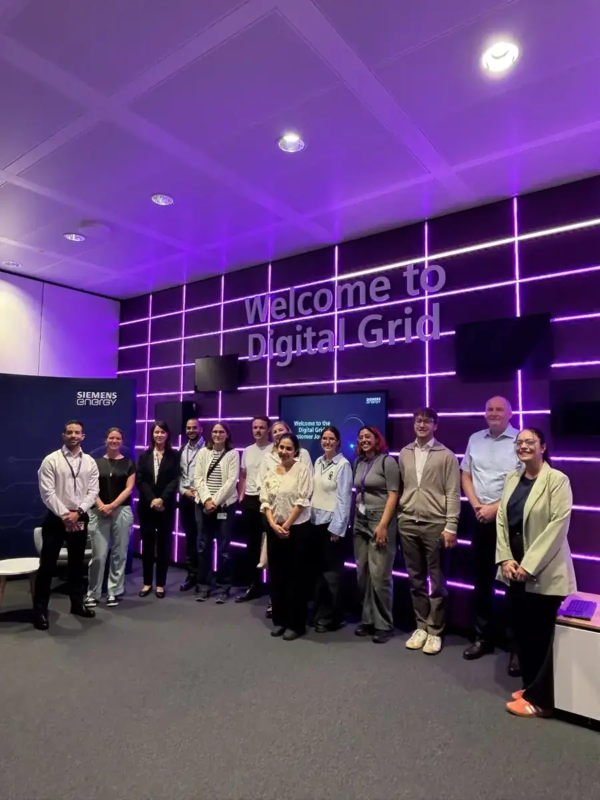

Now showing April 2026 – present
Working Student, Strategy & Sustainability
Siemens Energy Berlin, Germany
I support sustainability initiatives through internal communications, stakeholder engagement, strategic research and digital content, translating sustainability strategy into clear communication inside a global energy technology company, alongside my master’s at TH Wildau.
Sustainability communicationsStakeholder engagementStrategic research & benchmarkingSharePoint & Viva EngageCreative communication